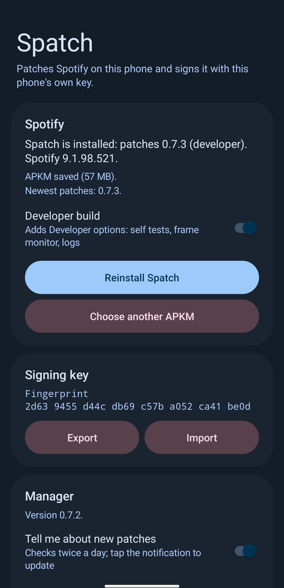

Spatch Manager
The app that keeps Spatch current.
A small Material You app that patches, signs, and installs Spatch on your phone, and keeps it up to date.
On your phone
Patches, signs, installs.
Every step runs on the phone, from your own copy of Spotify.
- Patch bundles. Spatch's changes ship as small diffs against your APKM, so the releases contain none of Spotify's files.
- Exact checks. The APKM, each APK, and every patched entry are matched against their SHA-256.
- Your key. Made on the phone at first run; export and import it as a password-protected
.p12. - Quick updates. Only
base.apkchanges between versions, so updates replace just that one, silently on Android 12+.


Clones
A second Spotify, your way.
Install Spatch again beside the first, with its own package name, app name, and icon. Each clone keeps its own login and downloads.
- Your name, your icon. Call it anything and pick any picture; the manager turns it into an adaptive launcher icon.
- Updates with the rest. A clone updates from the same patches as Spatch, in one tap.
- Beside Spatch. Clones are signed with your phone's key, so they install next to Spatch but not next to Spotify's own app.
Built in
Everything the manager handles.
Update notifications
Checks twice a day while you're online and tells you when new patches are out.
Material You 3
Takes its colours from your wallpaper, light or dark, with tonal cards and pill buttons.
Updates itself
When a newer manager is released, Update manager appears and installs it in place.
Nightly patches
Turn on Nightly patches to get each change as soon as it lands, built automatically from every commit. Off by default.
Live build progress
While a nightly builds, Changes shows its current step, a wavy progress bar, and about how long is left. Home mentions it too. If a build fails, the card says so and opens the log.
Invites
With an invite to a private Spatch source, the manager fetches the exact Spotify build (9.2.0.2053) the patches need, checked byte for byte.
Playful motion
A jelly navigation pill you can drag, buttons that squish and spring back, and pages that rise in. One switch turns it all off.